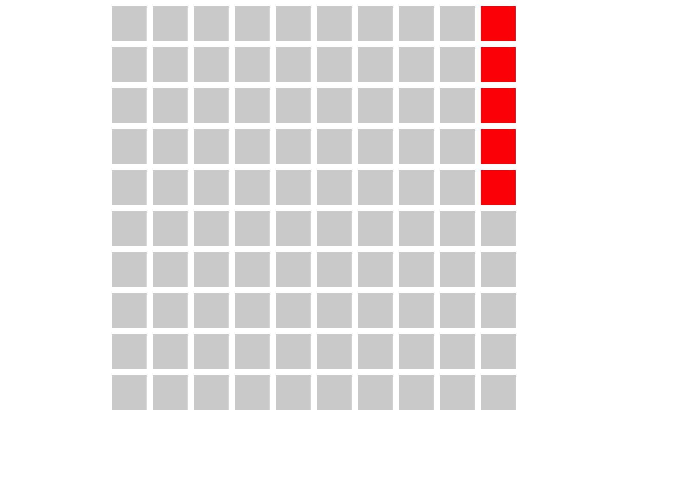
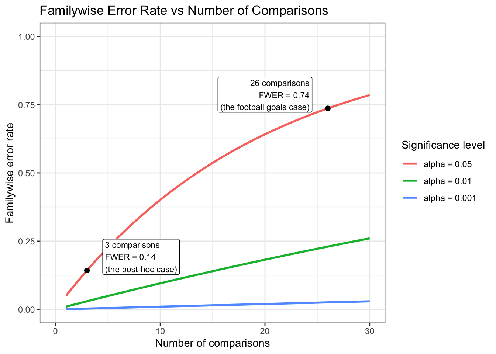
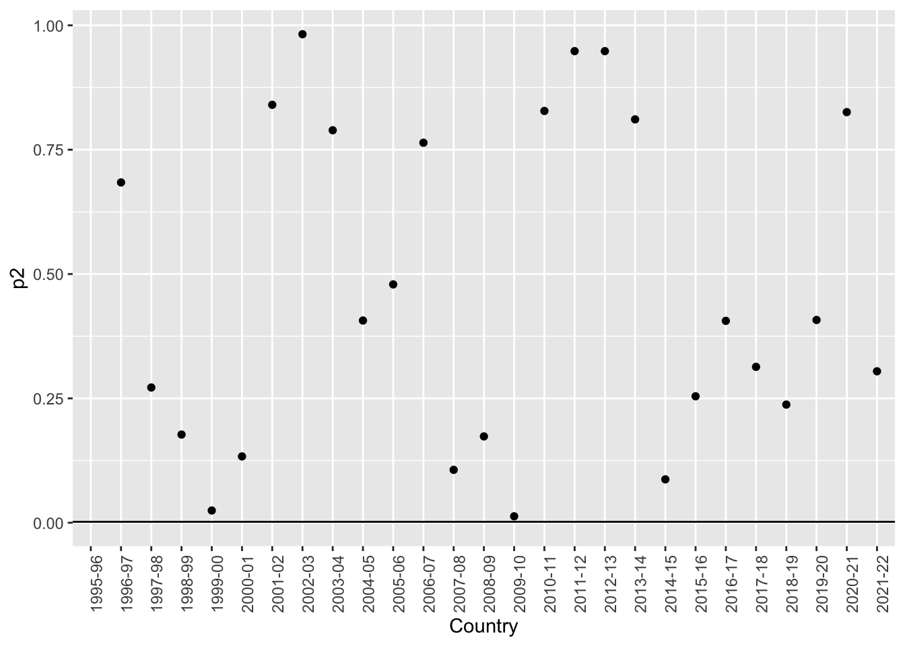
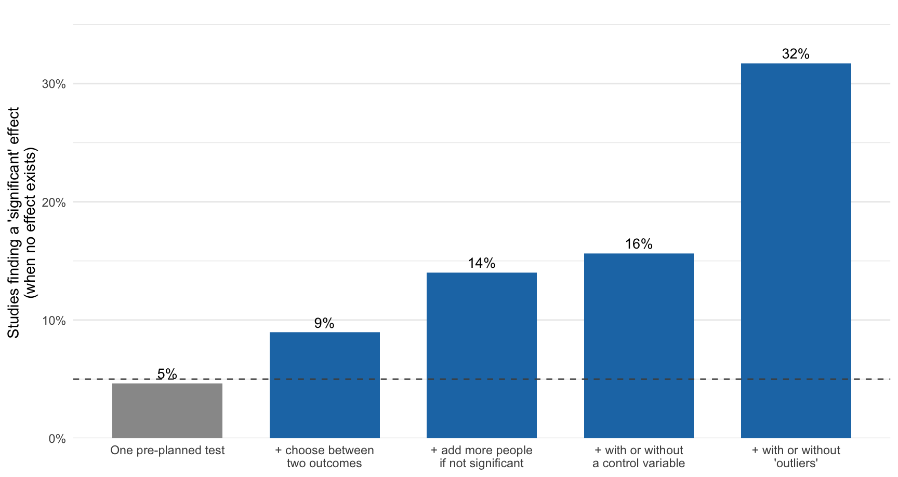

Chapter 13 Issues with Significance Testing
This chapter provides examples and analysis for the third part of Lecture 8, and also parts of Lecture 9.
In this chapter, I’ll explore examples of two common ‘issues’ or ‘debates’ regarding statistical significance testing, applied to two of our prior examples.
But first, let’s unpack more about the Christmas music study, and the multiple comparisons problem.
13.1 More on the Multiple Comparisons Problem
In this section, I’ll provide some visualizations which can help us to understand the problem with multiple comparisons.
However, it’s worth noting that the results depend on a number of assumptions about the research and what the real world actually looks like. The latter for sure we can never know. So, do bear that in mind.
First, let’s visualize the situation I just discussed in the slides. We test 100 hypotheses, and in every case, the null is true in the population (remember, we cannot know the true state of the population in reality). Below, each grey box represents a hypothesis we test.

Now, remember, even if all null hypotheses are true, our significance level, or p = 0.05, so we have to expect that on average we would expect 5 of these hypotheses tests to return p-values < 0.05, and thus we would reject the null. This is known as a false positive.
You might wonder how we could reduce the chances of false positive to zero. You could do this by setting your required p to be exactly zero. Do you see the problem here? You would certainly solve the false positive problem. But, you would also accept all null hypotheses. You would never actually find a statistically significant result in your research. Unless the null hypothesis really was true in the population in every single case, you would be inevitably missing out on making some discoveries.
Moving on, let’s visualize the situation in hand here. Below, the same 100 hypothesis tests (remember, the null is true in all cases), but this time I have marked in red the expected level of false positives.

Now, that is just the expected level for every 100 tests. If you remember from the discussion in Section 10.2, it may not be you get exactly 5 false positives in 100 tests, just that you would expect the long run average number of false positives to be 5%, in an all-null world.
So, we can look at it through a different lens. What is the probability that you would get at least one false positive in any given batch of multiple tests.
That is known as the familywise error rate, and it applies whenever you can define a cluster or ‘family’ of tests.
It’s the same principle as rolling a 6-sided die, and needing to score a ‘6’. Think of the ‘6’ as the ‘false positive’ here.
In a single die role, the probability of getting a ‘6’ is \(\frac{1}{6}\), and of course the equivalent probability of not getting a ‘6’ is \(1-\frac{1}{6}=\frac{5}{6}\).
But, what if you get to roll the die 3 times? It’s fairly easy to intuit that, even though the probability of getting a ‘6’ on any single roll stays the same, the probability of getting a single ‘6’ in 3 rolls is higher. In fact, we can calculate it.
To do so, we use the probability of not getting a 6, as follows:
P(no 6)=\((\frac{5}{6})^{3} = 0.579\)
Recalling the laws of probability then…
P(at least one 6) = 1 - P(no 6) = 1 - .579 = .421
So, now we have a 42% probability of at least one 6 in 3 rolls, even though the probability of getting a 6 in any single roll is unchanged.
We can calculate the familywise error rate for any set of multiple comparisons in exactly the same way.
One of the key advantages of ANOVA is that it is a single test, and thus does not fall prey to the multiple comparisons problem. However, in the case of post-hoc testing for the Christmas music study (Study 2), we are doing 3 pairwise comparisons (i.e. 3 tests) across the 3 groups, with a stated significance level of 0.05.
For 1 test, the false positive rate is \(1 - 0.95 = .05\)
But, for 3 tests, the false positive rate is \(1-0.95^{3}=0.14\)
We are ‘rolling the dice’ multiple times.
In fact, the familywise error rate is easy to see for yourself, once you know the formula: it’s simply \(1-(1-\alpha)^n\), where \(\alpha\) is your chosen significance level and n is the number of tests you’re running. The figure below plots that out for a few different significance levels, so you can see how quickly the error rate climbs as the number of comparisons grows.
I first saw this demonstrated properly using a lovely interactive calculator built by Dr Daniel Roelfs, during his time at the Norwegian Centre for Mental Disorders Research (NORMENT) in Oslo, and he kindly gave permission for me to reproduce the idea here. Check out his website: https://danielroelfs.com/about/. A book page can’t rely on an external app staying up forever for every reader, so the version below reproduces the same idea as a static figure instead.

Watching that curve climb feels kind of scary, right? There are many ways to deal with the problem, but they pretty much all amount to making some correction to the required significance level, making it more stringent, in order to reduce the false positives.
For example, in the Christmas-music post-hoc tests in Chapter 12, we used Tukey’s test, which uses a correction for multiple comparisons. Another method dealt with below is the Bonferoni Correction, which is generally the most well-known of them.
13.2 The Bonferroni Correction: Rate of Change in Football Goals per Season
Here, I will expand on the football goals rate-of-change example from Chapter 10, to incorporate corrections for the multiple comparisons problem. Again, I’m using data from https://www.footballhistory.org/league/premier-league-statistics.html
I’m building on the z-test table from the end of Chapter 10. But here, using the z-scores in the data file, I have calculated the p-value (2 tailed as we do not hypothesize a direction for the difference) for the z-scores for the difference between each season, year-on-year.
## Season Games Goals GPG
## Length:27 Min. :380 Min. : 931.0 Min. :2.450
## Class :character 1st Qu.:380 1st Qu.: 981.5 1st Qu.:2.583
## Mode :character Median :380 Median :1018.0 Median :2.679
## Mean :380 Mean :1013.9 Mean :2.668
## 3rd Qu.:380 3rd Qu.:1056.5 3rd Qu.:2.780
## Max. :380 Max. :1072.0 Max. :2.821
##
## SE Lower95CI Upper95CI Change
## Min. :30.51 Min. : 871.2 Min. : 990.8 Min. :-77.000
## 1st Qu.:31.33 1st Qu.: 920.1 1st Qu.:1042.9 1st Qu.:-35.500
## Median :31.91 Median : 955.5 Median :1080.5 Median : -2.000
## Mean :31.84 Mean : 951.5 Mean :1076.3 Mean : 3.192
## 3rd Qu.:32.50 3rd Qu.: 992.8 3rd Qu.:1120.2 3rd Qu.: 44.750
## Max. :32.74 Max. :1007.8 Max. :1136.2 Max. :111.000
## NA's :1
## Z negged p2
## Min. :-1.71027 Min. :-2.48514 Min. :0.01295
## 1st Qu.:-0.79795 1st Qu.:-1.30711 1st Qu.:0.19236
## Median :-0.04369 Median :-0.83063 Median :0.40618
## Mean : 0.07032 Mean :-0.88179 Mean :0.46986
## 3rd Qu.: 0.97794 3rd Qu.:-0.24627 3rd Qu.:0.80549
## Max. : 2.48514 Max. :-0.02236 Max. :0.98216
## NA's :1 NA's :1 NA's :1## # A tibble: 6 × 11
## Season Games Goals GPG SE Lower95CI Upper95CI Change Z negged
## <chr> <dbl> <dbl> <dbl> <dbl> <dbl> <dbl> <dbl> <dbl> <dbl>
## 1 1995-96 380 988 2.6 31.4 926. 1050. NA NA NA
## 2 1996-97 380 970 2.55 31.1 909. 1031. -18 -0.407 -0.407
## 3 1997-98 380 1019 2.68 31.9 956. 1082. 49 1.10 -1.10
## 4 1998-99 380 959 2.52 31.0 898. 1020. -60 -1.35 -1.35
## 5 1999-00 380 1060 2.79 32.6 996. 1124. 101 2.25 -2.25
## 6 2000-01 380 992 2.61 31.5 930. 1054. -68 -1.50 -1.50
## # ℹ 1 more variable: p2 <dbl>Here, we can plot the p-values (2-tailed), and again we see that two seasons seem to have significant differences. In other words, the p-values are less than 0.05 for the test as to whether the number of goals scored differs from the season before

We can see that the 1999-2000 season, and the 2009-10 seasons have p values less than 0.05
The question is are we suffering from the multiple comparisons problem? Should we correct for it?
It’s hard to say actually. Of course, we are indeed running multiple tests, 26 in fact. So, the chance of a false positive is high. The Bonferroni correction would immediately reduce the false positive chances, but at what cost?
Let’s see how this would work. In order to calculate a Bonferroni correction, you can either adjust the p-value directly that you calculate for each test, or instead simply adjust the ‘cutoff’ value for p, known as the critical p, to lower it from 0.05 and make the significance test ‘harder’ to pass. The formula to adjust the cutoff value is simply:
\(\alpha_b = (\frac{\alpha}{n})\)
Where
\(\alpha_b\) = Bonferroni-adjusted critical p value
\(\alpha\) = original critical p value (here this is 0.05)
n = number of comparisons (here this is 26)
So, the formula gives us a new Bonferroni-adjusted critical p value of 0.0019
Let’s see what happens with this new critical p value:

We can see that none of our tests now rejects the null. The Bonferroni correction is known as a highly conservative test. That is, it is based on the idea that the null hypothesis is true in each case in the population. We can thus consider it as the most stringent and conservative way to correct for the chance of false positives when doing multiple comparisons.
But, as I suggested above, that might not always be the best idea. Indeed, if you want to totally avoid any chance of a false positive, why not simply make the required alpha 0? Then, you would never get a false positive. Of course, you would never detect a true positive either.
What if it is the alternative hypothesis (that is, the H of an effect existing) that is true in all cases? In such cases, there can of course be no false positives. Therefore, in such a situation you would be increasing the chances of a false negative by reducing the chances of a false positive. So, what are the potential costs of each of these mistakes?
For example, Thomas Perneger’s 1998 paper in the BMJ is scathing about the Bonferroni adjustment. Take a look at https://www.bmj.com/content/316/7139/1236.full
Mind you, I am not saying that’s the final word, just that there are multiple perspectives on the issues!
It’s never as simple as it seems when making statistical decisions, is it?
13.3 Statistical Power: Brief Demonstration
Different types of analysis and research design require different types of power calculation, so it is hard to give a uniform example. But, for simplicity’s sake, let’s calculate the required sample size for the Christmas music study (Study 2) we conducted earlier, in Chapter 12.
Remember, really, we should have done this before collecting data.
To calculate power, all we need the parameters of the experiment and analysis design. As such, it is easily possible to do this before collecting data, and to design your studies around it. Really, we should do this a lot more in business and management - it’s routine in fields like medicine.
So, we had 3 groups, and used ANOVA
Let’s set a significance of 0.05, a required power of 0.8, and assume the effect size is moderate (say 0.25)
##
## Balanced one-way analysis of variance power calculation
##
## k = 3
## n = 52.3966
## f = 0.25
## sig.level = 0.05
## power = 0.8
##
## NOTE: n is number in each groupSo, we really wanted to have around 50 in each group to have an 80% chance of detecting a moderate effect presuming the null was true.
You can see that my study (with only 15 in each group) was rather underpowered — assuming a moderate effect. But now here’s a slightly awkward wrinkle. If instead I take the effect size this actual experiment produced — a generalized eta-squared of 0.41 back in Chapter 12, which converts to a Cohen’s f of about 0.84 — and plug that into the same calculation:
##
## Balanced one-way analysis of variance power calculation
##
## k = 3
## n = 5.679485
## f = 0.84
## sig.level = 0.05
## power = 0.8
##
## NOTE: n is number in each groupThat says I’d only have needed about 6 people per group for 80% power. That’s fewer than the 15 I actually used, not closer to it from above — a different, and slightly uncomfortable, lesson from the one I set out to teach.
Here’s the honest reading. What I’ve just done — taking the effect size my own small sample happened to produce, and treating it as the ‘true’ population effect size for a power calculation — is a well-known bad practice, sometimes called observed or post-hoc power. Small samples give you very noisy estimates of the true effect size: a difference that looks huge in a sample of 15 per group could easily be a real, more modest effect combined with a slice of good luck in exactly this data. So this isn’t really evidence that a study of 15 would reliably detect an effect this size in general — it’s evidence that this specific sample turned up a strikingly large difference. The honest way to plan a study is to commit to a plausible effect size before you collect any data (which is what the moderate f = .25 assumption above was trying to do, arbitrary as it was), not to reverse-engineer one from a result you already have. If anything, this is itself a small demonstration of why “just check whether the effect size you found was big enough” isn’t a fix for a badly-powered study after the fact — the number you’d get depends entirely on which random sample you happened to draw, small samples especially.
13.4 How to find an effect that isn’t there
“p-hacking” is one of those terms that everyone has heard and nobody quite agrees on. If you walked around a business school asking what it means, you’d get a surprisingly wide range of answers. At one end it means deliberate cheating: running analyses until something works, and reporting only that. I think it’s important to separate that from something much more common and much more interesting, which is researchers who are doing their honest best and still end up somewhere they shouldn’t. This section is mostly about the second kind, because it’s the kind you’re most at risk of yourself.
Let’s build it with a simulation. We’ll create a world in which the null hypothesis is true: two groups, A and B, that are genuinely no different on anything we measure. Then we’ll run 2,000 separate studies in that world.
It’s worth being very clear about what that means, because the whole logic depends on it. These are not 2,000 tests run on one dataset. They are 2,000 completely independent studies, each with its own freshly collected data. Think of it as 2,000 different researchers around the world, each setting out to study the same question without knowing about any of the others. Each study has 20 people per group to start with, two outcome measures that are moderately related to each other (the way two measures of similar things usually are), and a yes/no background variable about each person.
Let’s start with researchers who behave exactly as Chapter 11 says they should. Each of them decides in advance to test outcome 1 with a single t-test, runs their study, and does exactly that: one study, one test. Because there is no real effect, any significant result is a false positive, and each researcher has a 5 percent chance of getting one. Across all 2,000 studies, that’s what we see: 5 percent of them “find” an effect. This is what p < .05 actually promises. It can’t tell any individual researcher whether they are one of the unlucky ones. What it tells you is how often the procedure goes wrong across many independent studies like theirs.
Now let’s give every researcher some flexibility, one choice at a time. Each of them still runs just one study, with one dataset. What changes is how many ways they’re allowed to analyse it. None of these choices is outrageous. Each one is the kind of thing you’ll find in published papers, often without comment.
- Two outcomes. They measured two things, so why not check both, and their average? If any of the three is significant, that’s the finding.
- A few more people. If the result is “nearly there,” it seems reasonable to collect another 10 per group and look again.
- A control variable. Perhaps that background variable should be controlled for. Try it with and without.
- Outliers. Some values look a bit extreme. Try the analysis with and without anyone more than two standard deviations from their group’s mean.
After each new choice is added, we count how many of the 2,000 researchers can now find some path through their own data to p < .05. Figure 13.1 shows what happens.

Figure 13.1: How researcher flexibility inflates false positives. Each bar shows the percentage of independent simulated studies, all of an effect that does not exist, in which the researcher could find at least one analysis with p < .05. Each bar adds one more analytic choice to those before it. The dashed line marks the 5 percent that p < .05 is supposed to deliver.
By the time all four choices are available, 32 percent of researchers studying an effect that doesn’t exist end up with a “significant” result. That’s roughly one study in three, from a procedure that is supposed to be wrong one time in 20.
I want to draw three lessons from this.
First, no single step looks like cheating. Each choice, taken alone, is defensible, and some of them appear in textbooks as perfectly good practice. That’s precisely the problem. The rate climbs because the choices combine: each new fork in the road gives the data another chance to throw up something by luck. Notice, though, that these extra analyses are not new independent studies. They are different looks at the same data, so they tend to agree with each other. That’s why the rate climbs more slowly than the multiple comparisons formula earlier in this chapter would predict, because that formula assumes every test is independent. But it climbs all the same.
Second, the forks aren’t equal. Adding a control variable barely moved the rate here, while outlier removal roughly doubled it. Outliers are a genuinely hard case. I grew up in a survey tradition where variables ran from 1 to 5, so if you found a 55 it was a typo and you removed it without a second thought. But deciding what counts as an outlier after you’ve seen whether it helps your result is a very different thing. The honest question is always how the value came to exist, not whether the analysis looks better without it.
Third, and most important, you can’t see any of this from outside. The published paper from our last researcher would report one clean t-test with p = .03, and it would look exactly like a paper from one of our honest single-test researchers. The p-value itself isn’t wrong. The arithmetic is correct. But it answers the question “how surprising would this result be if it were the only test I ran?”, and it wasn’t the only test.
This idea goes further than you might think. The statistician Andrew Gelman calls it the “garden of forking paths,” and it’s probably my favourite idea in this whole area (Gelman and Loken 2014). His point is that a researcher doesn’t need to try lots of analyses for the problem to arise. It’s enough that they would have made different choices if the data had come out differently. Looking back from the end, every choice seems like the only logical one: this measure, this method, these outliers removed. But someone else starting from the same place might have walked a different path and found something else.
Our simulation is also on the gentle side. The paper that made this problem famous used a slightly different set of four choices and found that combining them pushed the false-positive rate to around 61 percent (Simmons et al. 2011). Real studies usually offer far more than four forks.
The most effective remedy is to decide the path in advance and write it down. That’s what pre-registration does, and I’ll say more about how to read pre-registered work below.
13.5 Reading the literature
The simulation earlier in this chapter showed that you can’t see the forking paths from outside. As a reader, that’s the frustrating part. You’re handed the one path the authors walked, and it looks like the only one there was. But the paths leave traces, and once you know what to look for, you’ll start noticing them.
13.5.1 Where you’ll meet this
Lots of tests in one place. A typical results table in a management paper might test a dozen coefficients across four models. Count the tests. If there are 40 chances to find p < .05 and the paper reports three significant results, that’s roughly what luck alone would produce. You met the formal version of this, the familywise error rate, earlier in this chapter, where running many comparisons raised the chance of at least one false positive. Forking paths are the same problem. The only difference is that the extra tests are hidden rather than printed in a table.
Sample sizes nobody explains. If a paper doesn’t say how its sample size was decided, you can’t rule out the “collect a few more” fork from our simulation. Good papers justify their sample size in advance, usually with a power analysis (earlier in this chapter). Odd numbers, or samples described as having been “extended,” are worth a second look.
Exclusions. Look for phrases like “after removing n cases,” “failed attention checks,” or “outliers were excluded.” None of these is wrong in itself. What matters is whether the rule was set before the results were known, and whether the main finding survives with the excluded cases put back in. Many good papers report both versions. When a paper reports only one, the question is worth asking.
Control variables that move around. If the set of controls changes from one model or table to the next without explanation, each change is a fork. In Chapter 4 you saw that controls should be chosen for causal reasons. Controls that look chosen for their effect on the p-value are a different thing.
“Robustness checks.” These are often valuable, and some of the best work goes much further: a specification curve or multiverse analysis runs the analysis every reasonable way at once and shows how often the result holds (Simonsohn et al. 2020; Steegen et al. 2016). But ordinary robustness checks are also chosen by the authors, and you only see the ones that were reported. A robustness section in which every single check comes out the same way deserves a little gentle scepticism.
Hypotheses that fit a bit too perfectly. Sometimes the hypotheses in the introduction match the results a little too neatly, including an unexpected interaction or a subgroup effect presented as if it had been predicted all along. This has a name, HARKing: hypothesising after the results are known (Kerr 1998). You usually can’t prove it. But a highly specific prediction that nobody would have thought to make in advance is a clue.
Pre-registration and registered reports. A pre-registration is a time-stamped plan, usually on a site such as the Open Science Framework, setting out the hypotheses, sample size and analysis before any data are collected. A registered report goes one step further: the journal reviews the plan and agrees to publish whatever the results turn out to be. Both are among the most important developments in research practice in the last 15 years. As a reader, don’t just note that a study was pre-registered; go and look at the plan. Does the paper match it? Are any deviations disclosed and explained? A pre-registration that nobody checks is just a link. Also bear in mind that pre-registration fits experiments far more easily than it fits analyses of secondary data, so its absence isn’t a red flag on its own in many management fields.
13.5.2 The connection back
Every fork gives chance another opportunity, and every p-value quietly assumes there was only one. That’s the whole of it. It’s the same logic as the multiple comparisons problem earlier in this chapter, and the same logic as the simulation above. What changes from paper to paper is only how visible the forks are.
13.5.3 Questions worth asking
- How many tests could they have run? Not just how many they report: think about the outcomes, subgroups, controls and exclusions they could have tried.
- Was the sample size set in advance? Is there a power analysis, and was it done before data collection?
- Are the exclusion rules justified, and does the result survive without them?
- If it was pre-registered, does the paper match the plan?
- Where do the key p-values sit? A single p = .04 is unremarkable. A paper whose every central result falls between .01 and .05 is a pattern worth noticing. Across many studies, genuine effects tend to produce a pile of very small p-values rather than a cluster just under the line (Simonsohn et al. 2014).
- Would the story survive if the weakest result were removed?
13.5.4 One red flag
The too-perfect paper: every hypothesis supported, every key result just under .05, a sample size nobody explains, and a robustness section that agrees with everything. No single feature proves anything, and I’d hate you to treat honest researchers who got lucky as suspects. But put together, that profile is exactly what a walk through the garden of forking paths produces. Real data is messier than that, and papers that admit to some mess are, in my experience, often the ones you can trust most.
13.5.5 If you want to read more
Gelman and Loken’s short article “The statistical crisis in science” (Gelman and Loken 2014) is the clearest statement of the forking-paths idea and is free to read online. For a book-length account of how these problems play out across science, and what’s being done about them, Stuart Ritchie’s Science Fictions (Ritchie 2020) is accessible, fair and genuinely hard to put down.